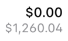

Feb 6, 2026
Using OpenType Attributes with UIFont
Fonts come with numerous style settings that are difficult to use in UIKit and AppKit. Learn how to determine which ones are available, and how to use them.
OpenType Features
Modern fonts come with hidden attributes that modify their look in subtle ways. Some examples are making the 4 glyph have an open back, making the 6 and 9 glyphs have straight tails rather than curved, and many more.
On the web, you can activate these features with well-defined, documented, CSS modifiers. It's very easy to load in a font, say you want the alternate G glyph, and move on! Here's the very lengthy documentation from Mozilla for that.
I've used these features a couple of times previously, once for replicating the beautiful typography that Xcode uses for its line number gutter. A while ago, for CodeEdit, we were stumped as to how Xcode was making their line number font have open fours, straight tailed sixes and nines, until we found the following in a different open-source project.
func rulerFont() -> NSFont {
/// Set the open four
let alt4: [NSFontDescriptor.FeatureKey: Int] = [
.selectorIdentifier: kStylisticAltOneOnSelector,
.typeIdentifier: kStylisticAlternativesType
]
/// Set alternate styling for 6 and 9
let alt6and9: [NSFontDescriptor.FeatureKey: Int] = [
.selectorIdentifier: kStylisticAltTwoOnSelector,
.typeIdentifier: kStylisticAlternativesType
]
let features = [alt4, alt6and9]
let descriptor = font.fontDescriptor.addingAttributes([.featureSettings: features, .fixedAdvance: fontAdvance])
return NSFont(descriptor: descriptor, size: 0) ?? font
}
We were not OpenType experts, so this tipped us off that we were missing something. This led us down a rabbit hole of figuring out exactly what the font was, including what features, attributes, and sizes it had until we had it perfect.
Eventually we were able to perfectly replicate the Xcode font, it's hilariously specific but pixel perfect, check it out.
This still left me wondering how I could find what features a font supported, or how in the world you could find those seemingly random C identifiers.
Finding Which Features a Font Supports
I'm now working on a version 2.0 of my budgeting app OpenBudget, and while designing in Sketch I found that to make some small currency labels legible, I wanted three specific OpenType features:
- Open Currency.
- Open Fours.
- Straight Six and Nine.
Sketch handily lets you view all the available options for a font in a nice menu with labels and checkboxes. However, if you try and google "UIFont OpenType Open Four" you'll be sorely disappointed. I knew that CoreText had constants somewhere for each feature, but looking up the CoreText headers yields a list of undocumented constants. As it turns out Apple's CoreType predates OpenType, so the identifiers don't match to what OpenType calls them and Apple has no documentation for what each of them do.
Eventually I stumbled upon the CoreText documentation for font features and found the following magical CoreText function.
func CTFontCopyFeatures(_ font: CTFont) -> CTArray?
Every font in Cocoa stores a list of every supported feature in their features array. If you pass a UIFont or NSFont to this function (thank goodness for class bridging) you'll find a map like the following.
{
CTFeatureTypeIdentifier = 35;
CTFeatureTypeName = "Alternative Stylistic Sets";
CTFeatureTypeSelectors = (
{
CTFeatureOpenTypeTag = ss01;
CTFeatureOpenTypeValue = 1;
CTFeatureSelectorIdentifier = 2;
CTFeatureSelectorName = "Straight-sided six and nine";
},
{
CTFeatureOpenTypeTag = ss02;
CTFeatureOpenTypeValue = 1;
CTFeatureSelectorIdentifier = 4;
CTFeatureSelectorName = "Open four";
},
{
CTFeatureOpenTypeTag = ss03;
CTFeatureOpenTypeValue = 1;
CTFeatureSelectorIdentifier = 6;
CTFeatureSelectorName = "Vertically centered colon";
},
{
CTFeatureOpenTypeTag = ss04;
CTFeatureOpenTypeValue = 1;
CTFeatureSelectorIdentifier = 8;
CTFeatureSelectorName = "Open currencies";
},
);
},
You may note here, that these labels indicate these constants are exactly what I'm looking for.
Mapping Selectors To Identifiers To UIFont
Now, if you take the map you printed from your font and try to put it into a features array, you'll quickly realize that you don't have a whole lot of information. Here's how to read that map to find exactly what to put in your Swift code.
For creating a UIFont or NSFont, we need to create an array of attribute dictionaries. Here's what they look like.
let attribute: [UIFontDescriptor.FeatureKey: Int] = [
.type: // The type of attribute we're adding
.selector: // What option we're enabling (or disabling) on the type.
]
For
NSFont, the type and selectors are namedselectorIdentifierandtypeIdentifier.
Features With Unnamed Constants
You'll see the top-level dictionary here has a CTFeatureTypeIdentifier key. This key maps to the "Feature types" enum from those CoreText headers I referenced earlier. That's the .type we're looking for. To find the selector, we'll take a look at the CTFeatureOpenTypeTag. The CTFeatureOpenTypeTag (if it's available on your feature) maps to a constant we can provide to CoreText to indicate if we want the feature on or off. That constant looks like:
kStylisticAlt[Number][On/Off]Selector
If we look at the map from earlier, to enable "Open currencies" we have the dictionary:
{
CTFeatureOpenTypeTag = ss04;
CTFeatureOpenTypeValue = 1;
CTFeatureSelectorIdentifier = 8;
CTFeatureSelectorName = "Open currencies";
},
So we'll want the fourth selector, and we'll want it on. So we get the constant.
kStylisticAltFourOnSelector
And we already determined the type from the parent (number 35) which maps to the kStylisticAlternativesType constant in the CoreText headers. Combining this gives us the resulting Swift dictionary.
let altCurrency: [UIFontDescriptor.FeatureKey: Int] = [
.selector: kStylisticAltFourOnSelector,
.type: kStylisticAlternativesType
]
Features With Named Constants
There's a second case here, you'll likely see other font features that don't have the number-based constants. Instead, those dictionaries will look like:
{
CTFeatureTypeExclusive = 1;
CTFeatureTypeIdentifier = 37;
CTFeatureTypeName = "Lower Case";
CTFeatureTypeSelectors = (
{
CTFeatureSelectorDefault = 1;
CTFeatureSelectorIdentifier = 0;
CTFeatureSelectorName = Default;
},
{
CTFeatureOpenTypeTag = smcp;
CTFeatureOpenTypeValue = 1;
CTFeatureSelectorIdentifier = 1;
CTFeatureSelectorName = "Small Capitals";
}
);
},
For these, head to the CoreText headers, find your type constant (37 here, kLowerCaseType) and search the headers for that constant. The options here will have their own enum. This is the case for all options that have set standard options. For the previous example some fonts may have different features enabled by different numbers there. Here, the options are known beforehand.
/*
* Summary:
* Selectors for feature type kLowerCaseType
*/
enum {
kDefaultLowerCaseSelector = 0,
kLowerCaseSmallCapsSelector = 1,
kLowerCasePetiteCapsSelector = 2
};
Conclusion
After printing the font features and doing this investigating, I now have the following extension for UIFont.
import UIKit
extension UIFont {
public func currency() -> UIFont {
/// Set the alt currency
let altCurrency: [UIFontDescriptor.FeatureKey: Int] = [
.selector: kStylisticAltFourOnSelector,
.type: kStylisticAlternativesType
]
/// Set the open four
let alt4: [UIFontDescriptor.FeatureKey: Int] = [
.selector: kStylisticAltOneOnSelector,
.type: kStylisticAlternativesType
]
/// Set alternate styling for 6 and 9
let alt6and9: [UIFontDescriptor.FeatureKey: Int] = [
.selector: kStylisticAltTwoOnSelector,
.type: kStylisticAlternativesType
]
let newDescriptor = fontDescriptor.addingAttributes([
.featureSettings: [alt4, alt6and9, altCurrency]
])
return UIFont(descriptor: newDescriptor, size: pointSize)
}
}
Which gives me this beautiful typography for my currency labels.
This is one of the many changes I'm working on for version two of OpenBudget. Modifying fonts slightly for labels like this that are common throughout my app is essential for making everything legible.
It's a little annoying that CoreText doesn't map nicely to OpenType feature names, but honestly it's understandable. I think there's an opportunity here for some lookup tool that could select a font, open it up, and list all the available features with a preview. But honestly, now that I know how to find those features, it's such a small one-time task that I don't really mind doing it by hand.
Feb 6, 2026